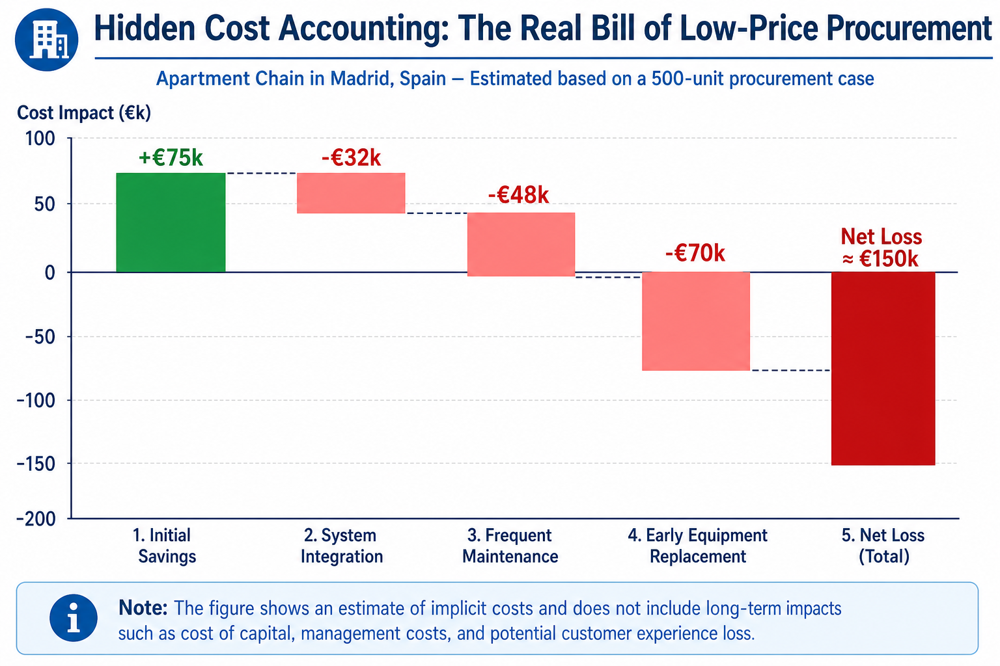
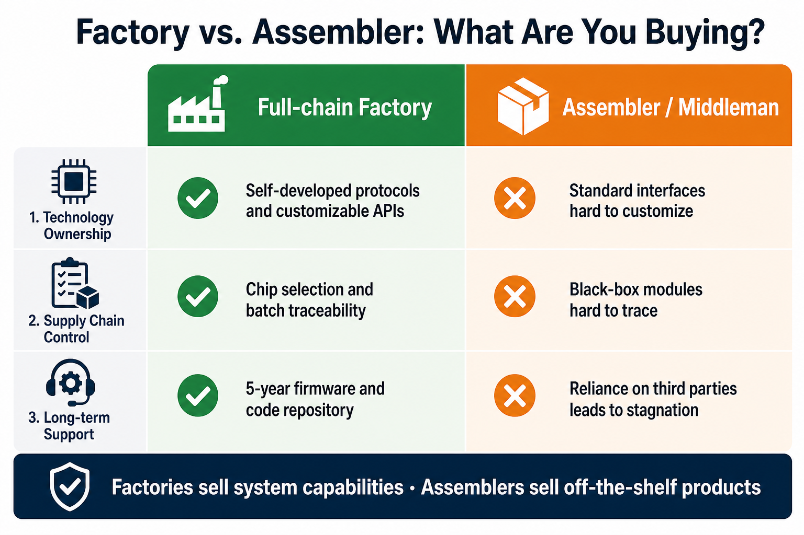
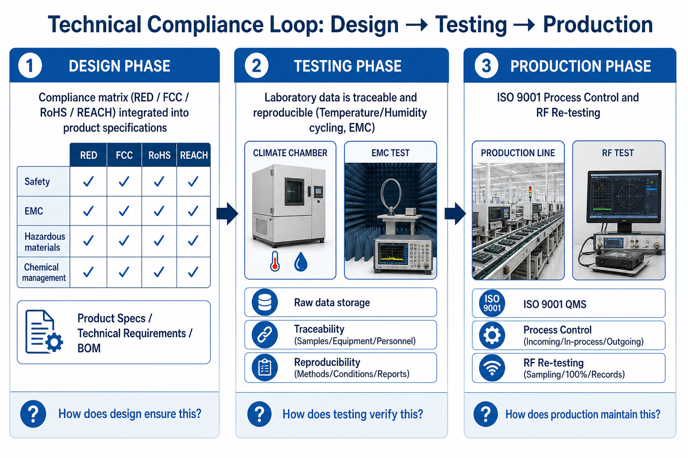
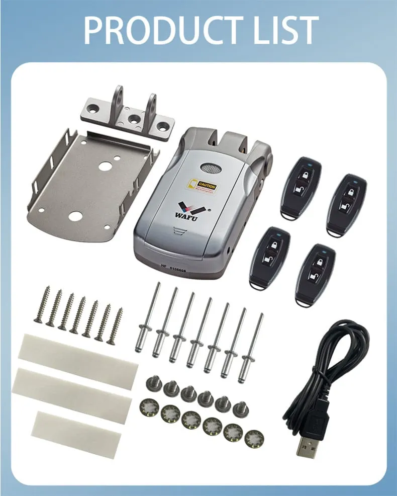
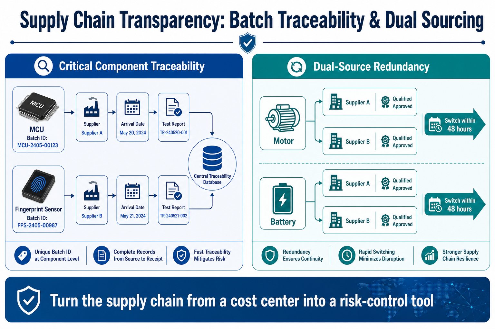
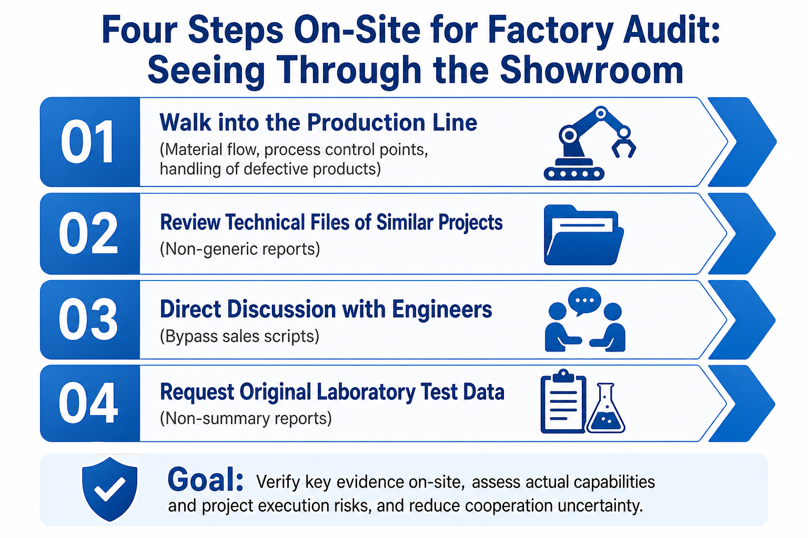

Este artigo foi redigido pela Equipa de engenharia B2B WAFU para compradores de exportação, integradores de sistemas e equipas de aprovisionamento OEM/ODM. A WAFU Smart Lock, fundada em 2013, concentra-se em soluções de fechaduras inteligentes B2B — com certificação ISO 9001:2015, conformidade CE/FCC/RoHS e clientes em mais de 20 países e regiões na Europa, Rússia, Sudeste Asiático e além. Em caso de republicação, cite a fonte.
Dimensões-chave num relance
01 Conformidade técnica
Rastreável do design aos testes e à produção — não uma pilha de PDF.
02 Controlo de qualidade
Dados de laboratório quantificados sobre fiabilidade e adequação ambiental.
03 Transparência da cadeia de fornecimento
Componentes críticos rastreáveis, redundância dual-source e alerta precoce sobre prazos de entrega.
04 Iteração tecnológica
Compromisso de ciclo de vida de 5 anos: firmware, módulos de hardware e monitorização das normas.
1. Introdução: uma armadilha de compra de exportação mais profunda do que parece
Em 2023, um distribuidor espanhol comprou 500 fechaduras para portas inteligentes em Shenzhen para uma cadeia de apartamentos em Madrid. O responsável de compras escolheu a oferta mais económica — 15 % abaixo da média de mercado. Na assinatura, o fornecedor entregou um dossier completo de certificados CE e FCC; a ficha técnica parecia impecável.
Seis meses depois, os problemas surgiram.
Após a instalação das primeiras 200 fechaduras, o sistema de gestão imobiliária (PMS) não conseguia sincronizar o estado dos quartos com as fechaduras. A equipa técnica constatou que a chamada « API » era um endpoint HTTP ad hoc — nem RESTful, nem protegido por OAuth 2.0. Os códigos PIN temporários tinham de ser gerados manualmente numa consola de administração local e não podiam ser ligados ao sistema de receção.

Um risco mais grave surgiu no mês 12. Cerca de 20 % das fechaduras desenvolveram avarias no motor (segundo estatísticas de reparação do setor). Durante as reparações, descobriu-se que chips críticos eram peças recondicionadas provenientes de canais obscuros. O « suporte de firmware 5 anos » prometido interrompeu-se já no segundo ano. Pior ainda: quando o imóvel precisou de uma capacidade de utilizadores de impressão digital mais elevada para a expansão, o fornecedor respondeu: « O hardware não o permite — mudem a placa-mãe. »
O balanço final mostrou que a poupança inicial de 75 000 € na compra foi inteiramente absorvida pela integração de sistema (32 000 €), pelas reparações frequentes (48 000 €) e pela substituição antecipada dos equipamentos (70 000 €) — prejuízo total de cerca de 150 000 € (estimativa de setor).

Não é um caso isolado. No cluster das fechaduras inteligentes de Shenzhen, as guerras de preços fizeram emergir dois tipos de fornecedores: as fábricas e os « montadores ». As primeiras controlam a cadeia completa, desde a escolha dos chips e do design PCB até ao firmware e aos testes de certificação. Os segundos compram módulos acabados e montam-nos — a profundidade técnica para em « liga ».
Se compararem só o preço FOB, estão a comparar dois ciclos de vida de produto totalmente diferentes. Um vende uma solução de sistema para 10 anos de funcionamento fiável; o outro vende hardware que passa o controlo de saída. Este fosso de compreensão é a primeira — e a mais profunda — armadilha da compra de exportação.
2. Fábrica vs intermediário: o que estão realmente a comprar?
Para ver a diferença, olhem para além da superfície em três dimensões: propriedade tecnológica, controlo da cadeia de fornecimento e compromisso de suporte a longo prazo.

A propriedade tecnológica determina a flexibilidade do produto
As fábricas possuem a sua própria IP. Uma fábrica full-chain pode, por exemplo, explorar um protocolo de rede SecureMesh™ desenvolvido internamente, cujo stack é personalizável desde a camada física até à camada de aplicação. Se um cliente precisa de uma integração profunda com um PMS específico, esta fábrica pode adaptar as estruturas dos pacotes, otimizar o timing e personalizar as API (ver também o nosso white paper de aprovisionamento B2B OEM/ODM). Os intermediários oferecem apenas « interfaces standard »; cada personalização exige solicitar uma fábrica a montante — lento, caro e com baixa taxa de sucesso.
O controlo da cadeia de fornecimento determina a constância da qualidade
As fábricas constroem a qualidade desde a escolha dos chips. Peças críticas como as MCU NXP e os sensores de impressão digital Goodix podem integrar uma política de stock de segurança de 6 meses com fornecedores multi-source. Cada lote de entrada é integralmente controlado quanto à coerência elétrica. Os intermediários compram « módulos black box », não conseguem rastrear os lotes de componentes nem garantir o desempenho de um lote para o outro. Em caso de escassez de chips, as fábricas podem qualificar rapidamente alternativas; os intermediários esperam — como se vê nos projetos OEM para residências premium.
O suporte a longo prazo determina o ciclo de vida do produto
O compromisso de firmware 5 anos de uma fábrica baseia-se num investimento contínuo em I&D: uma equipa de firmware dedicada mantém uma base de código completa desde o bootloader até à camada de aplicação, e pode otimizar algoritmos, corrigir vulnerabilidades e acrescentar funcionalidades. O « suporte » dos intermediários depende frequentemente de equipas terceiras; se o fabricante de chips original deixar de manter uma plataforma, toda a gama para.
A diferença essencial: as fábricas vendem uma capacidade de sistema; os intermediários vendem um produto acabado.
Quando compram fechaduras inteligentes, estão na realidade a comprar 5–10 anos de funcionamento estável — e esta segurança só vem de fábricas com competência técnica full-chain.
3. Quatro dimensões-chave para uma auditoria de fábrica
Dimensão 1: a conformidade técnica é um sistema, não uma pilha de PDF
A maioria dos « certificados » dos fornecedores são apenas documentos de resultado. Uma verdadeira conformidade técnica significa traduzir os requisitos normativos em especificações de produto desde o design, cobri-los integralmente nos testes e aplicá-los de forma rastreável na produção.

Fase de design: a conformidade como restrição de conceção
Numa fábrica performante, a equipa de design constrói desde a definição do produto uma matriz de conformidade: EU RED, FCC Part 15, RoHS, REACH e mais de 20 outros requisitos tornam-se regras de conceção concretas. Por exemplo, a frequência SecureMesh™, a potência de emissão e o duty cycle são fixados desde o primeiro dia para satisfazer ETSI EN 300 328 — não « recuperados » depois com filtros.
Fase de teste: dados de laboratório por detrás das afirmações de conformidade
Os laboratórios internos conduzem testes intensificados com base em IEC 60068, EN 14846 e normas correlacionadas — cerca de 20 % mais severos do que a prática setorial corrente (análise comparativa face a estas normas). Os testes ambientais cobrem ciclos temperatura/humidade de −40 °C a 85 °C; a EMC compreende as emissões irradiadas, a imunidade, o ESD e a suite completa. Cada relatório está ligado a uma versão de hardware, uma versão de firmware e uma condição de teste precisas — rastreável e reproduzível. Os intermediários entregam frequentemente relatórios de « modelo genérico » que divergem da versão de produto entregue.
Fase de produção: controlo de processo para a constância
A ISO 9001 integra a conformidade na produção. Fases críticas como a brasagem dos módulos RF e a adaptação da antena têm pontos de controlo; cada lote é reamostrado na RF. A conformidade não significa « amostra bem-sucedida » — mas « colocação em segurança do processo ».
Um verdadeiro sistema de conformidade responde a três perguntas: (1) Como o design assegura a conformidade? (2) Como os testes a verificam? (3) Como a produção a mantém? Se um fornecedor só consegue entregar PDF sem explicar estes três pontos, a « conformidade » pode ser apenas papel.
Dimensão 2: o controlo de qualidade são dados de laboratório, não só a linha de produção
Durante uma visita à fábrica, a automação na linha salta à vista. As verdadeiras decisões de qualidade vêm de dados de laboratório quantificados.
Os dados de fiabilidade orientam os custos de manutenção
Testes de duração mecânica para além das normas do setor: 500 000 ciclos de ferrolho, 100 000 ciclos de arranque/paragem do motor, 1 000 000 pressões no sensor de impressão digital. Estes dados alimentam modelos MTBF (dados de duração acelerada, métodos IEC 61709). Por exemplo, um modelo de Weibull a partir de testes acelerados para a série de fechaduras invisíveis WF-019 mostra uma MTBF projetada superior a 87 600 horas (~10 anos à frequência de utilização standard). Os responsáveis de projeto podem orçamentar a manutenção a 10 anos em vez de se basearem em vagas promessas « dura 5 anos ».

Os dados de desempenho orientam a experiência do utilizador
O teste de impressão digital a semicondutor não significa « reconhece? » — quantifica um FAR inferior a 0,001 %, um FRR inferior a 0,1 % e um tempo de reconhecimento de 0,5 s, sob dedos secos/húmidos/desgastados e de −20 °C a 60 °C. Se um fornecedor diz « o reconhecimento é rápido », perguntem: a que velocidade, em que condições, e onde estão os dados?
Os dados ambientais orientam o campo de utilização
Arranque a frio a −40 °C, funcionamento a alta temperatura a 85 °C, humidade 95 % — isto decide se um produto funciona nos invernos nórdicos ou nas estações das chuvas do Sudeste Asiático. Os intermediários entregam frequentemente dados « interior à temperatura ambiente »; em ambientes extremos, as taxas de avaria sobem fortemente.

O valor central do controlo de qualidade: transformar a incerteza em risco mensurável graças aos dados de laboratório. Se um fornecedor não consegue entregar um dossier de testes completo, estão a carregar um risco técnico desconhecido.
Dimensão 3: a transparência da cadeia de fornecimento é um controlo de riscos, não só uma BOM
Uma BOM diz-vos o que é usado. A transparência diz-vos de onde vêm os componentes, se o aprovisionamento é estável e como são geridos os problemas.

Componentes críticos rastreáveis
Cada MCU e sensor de impressão digital leva um código único, ligado ao fornecedor, à data de entrega e ao relatório de teste. Os problemas de qualidade podem ser circunscritos aos lotes afetados em vez de um recall completo da linha.
Redundância de fornecedores
Motores, baterias e outras peças críticas têm pelo menos duas fontes qualificadas. Em caso de problema de capacidade ou qualidade de uma fonte, a passagem em 48 horas mantém a produção nos prazos.
Alerta precoce dos riscos
Modelos baseados nos prazos de entrega dos chips, nos preços dos materiais e na geopolítica ativam avaliações de alternativas quando, por exemplo, o lead time de um chip passa de 8 para 20 semanas.
A transparência faz da cadeia de fornecimento um instrumento de controlo de riscos em vez de um centro de custos. Se um fornecedor não consegue explicar fontes, backups e mecanismos de reação para as peças críticas, estão a carregar um risco de rutura, de variação de qualidade e de atraso.
Dimensão 4: a iteração tecnológica é um compromisso de ciclo de vida de 5 anos, não só OTA
A OTA é uma funcionalidade. A iteração tecnológica é uma capacidade de evolução da arquitetura.

Iteração de firmware: crescimento contínuo das funcionalidades
Um firmware modular pode, ao longo de 5 anos, acrescentar novos métodos de autenticação (p. ex. veias da mão via atualização de módulo), melhorar os algoritmos e corrigir falhas de segurança — sem substituição de hardware.
Iteração de hardware: interfaces retrocompatíveis
Os designs modulares permitem fazer evoluir independentemente a placa-mãe, o módulo de comunicação e a gestão da alimentação. O suporte de uma nova norma rádio (p. ex. Matter) pode exigir apenas a substituição do módulo de comunicação — e protege o investimento do cliente.
Iteração do ecossistema: monitorização das normas
Uma participação ativa nas normas industriais mantém a arquitetura pronta para a geração seguinte — p. ex. Bluetooth 4.2 para 5.3 via atualização de firmware.
Um compromisso de ciclo de vida de 5 anos significa: o produto não se torna obsoleto após um breve ciclo tech, e cada investimento continua a dar frutos. Se um fornecedor fala só de OTA e não consegue mostrar qualquer roadmap de arquitetura, o produto corre o risco de obsolescência técnica em dois anos.
4. Auditoria no local: como ver para além da montra do showroom

- Ignorem a zona demo preparada; vão à linha de produção e observem o fluxo de materiais, os pontos de controlo de processo e o tratamento dos rejeitados.
- Não se contentem com relatórios técnicos genéricos; exijam dossiers técnicos provenientes de projetos semelhantes ao vosso.
- Não fiquem ao nível comercial; discutam os desafios técnicos concretos e as soluções com os engenheiros.
- Não aceitem as promessas orais; exijam os dados de teste de laboratório originais, não só relatórios de síntese.
5. Conclusão: a vossa decisão de compra diz respeito a mais do que o preço
As quatro dimensões visam um único coração — a segurança proveniente da capacidade técnica: especificações seguras, custos seguros, ciclo de vida seguro.
Escolham uma fábrica, ganhem o controlo técnico e o espaço de evolução. Escolham um intermediário, comprem uma mercadoria standardizada mais uma cadeia de fornecimento que pode romper a qualquer momento.
O primeiro constrói uma vantagem a longo prazo: sistemas estáveis, custos controláveis, iteração autónoma.
O segundo planta um risco a longo prazo: integração pesada, manutenção cara, estagnação técnica.
Nesta categoria de elevada intensidade tecnológica, a oferta mais baixa é frequentemente a rubrica de custo mais cara. Cada cêntimo poupado no preço pode pagar-se várias vezes em reparações, integração e tempos de paragem. O verdadeiro valor é a segurança da capacidade full-chain — algo que nenhuma etiqueta de preço mede.
Os números deste artigo baseiam-se em testes de laboratório e estimativas de setor; o desempenho real do produto está sujeito a validação de projeto.
6. Guia de ação: da avaliação à decisão
Avaliar um fornecedor de fechaduras inteligentes significa avaliar se o seu sistema técnico pode sustentar o ciclo de vida do vosso projeto.
Privilegiem os fornecedores com um stack tecnológico próprio e um sistema de testes completo.
Ajam agora:
- Consultar as especificações da fechadura invisível WF-019 na biblioteca de produtos
- Reservar uma consulta técnica para discutir os requisitos do vosso projeto
As verdadeiras poupanças nascem de um funcionamento estável a longo prazo graças à capacidade técnica.
Para aprofundar: controlo de qualidade OEM/ODM, cadeia de fornecimento das fechaduras invisíveis e white paper de aprovisionamento B2B OEM/ODM — para fechar o ciclo de avaliação do fornecedor.